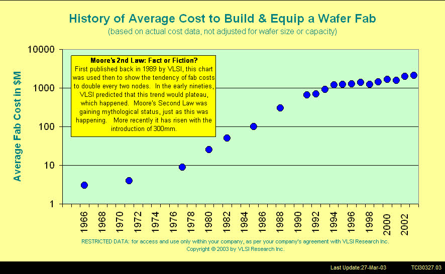
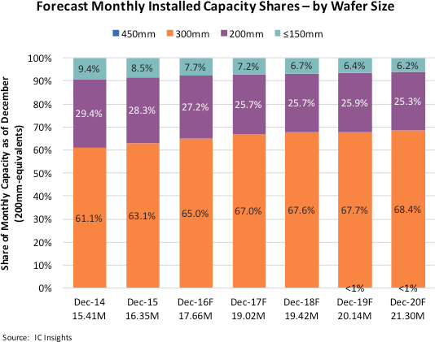

A detailed look into semiconductor fab construction, design, and considerations.
What is a fab anyway? Short for semiconductor fabrication facility or plant, a fab is where computer chips are made. Wafers, generally made of silicon, are put through hundreds to thousands of individual processes and tests in a fab before being diced into individual chips (called die) and packaged for actual use by the customer. Some companies, such as Texas Instruments and Intel, build and operate their own fabs (these are called integrated device manufacturers). Others outsource the physical chip-making process to foundries, or companies that exclusively create chips for others. Companies that do this are considered fabless. This is done due to how expensive building and operating a fab is. Why go through all the trouble when billions of dollars and millions of man-hours can be saved by giving the work to someone else who will do it faster and better?
Fabs help drive technological advancement from a hardware perspective, while supplying other industries with their required electronics (see 2020-present global chip shortage). They are undeniably important to the world economy and progress, so by extension, improving their ease of construction and feasibility is important.
Building and running a fab is expensive. Really expensive. Moore's Second Law states that the cost of a fab will double every four years, and this has held roughly true per the following plot (note this is a semi-log plot, so the linearity means it's actually an exponential relationship):
Fab cost depends on a multitude of factors:
For reference:
Wafer sizes have increase progressively over the history of electronics, starting at measly 1-inch wafers and now at the industry standard of 300 mm. Some fabs still use 150 mm and 200 mm wafers. 450 mm wafers have been proposed and the Global 450 Consortium created by relevant companies, but has since shut down because of lack of interest and expected return on investment. 300 mm is the size of the foreseeable future with no plans to increase.
Because 300 mm is constant for all new fabs, there will be no analysis done on the advantages/disadvantages of moving to 450 mm. Chris Mack outlines the whys for 450 mm here.
No literature nor statistics were found ROI for new fabs. Time frames of 18 months to three years have been cited without sources.
Factors for ROI include:
Obviously, companies want to produce more wafers faster and cheaper.
A handful of factors are considered when deciding where to build a new fab.
Financial incentives in the form of tax breaks, subsidies, and cheap labor are incredibly attractive to companies. Take the $954MM worth of incentives Samsung received for its Taylor fab:
[Samsung] will be rebated 92.5% of its city property taxes during the initial decade of the project, 90% in the second decade and 85% in the third. The city has estimated the combined value of those rebates at $467.8 million, based on an assumption that there will be no change to its property tax rate over the 30-year life of the agreement.
Taylor also will extend water and sewer service to the site of the development, at an estimated cost of $18 million.
$172.1 million in property tax rebates from Williamson County over 20 years, assuming no change in the property tax rate. The county’s agreement calls for a 90% property tax rebate for Samsung during the first 10 years of the project, with an extension for another 10 years at 85% if the company is in compliance with the terms. The American-Statesman calculated the total value of the county tax rebates based on the same development schedule for the project used by the city of Taylor. The county also will foot the bill for about $120 million in roadwork near the site, such as improvements to County Roads 401 and 404, and portions of the planned Southeast Loop to connect Texas 130 to U.S. 79. Those projects were already in the long-range transportation plan, county officials said, although they’ll be accelerated in certain cases.
A $314 million, 10-year property tax break from the Taylor Independent School District. Samsung will still pay all of its school taxes that go to fund school district debt, but it will pay just a fraction of the portion earmarked for maintenance and operations over the duration of the deal. The tax break is being granted under the state’s Chapter 313 incentive program, which will expire Dec. 31, 2022, because it wasn’t renewed during the recent session of the state Legislature. The expiration won’t affect deals put in place before then.
$27 million from the Texas Enterprise Fund, a deal-closing tool used by the governor’s office as a final carrot to sway corporate decisions in competitive situations. In addition, the Texas Department of Transportation will pay $80 million of the cost for section 3 of the Southeast Loop. Funding for about $40 million of construction costs for section 2 of the loop has yet to be identified, Williamson County officials said.
All things considered, this is extremely beneficial for all parties involved. The company is able to save vast sums of money; the politicians that made the deal happen get positive PR for the economics gains to be made; the city creates jobs and most industries within the jurisdiction are positively affected.
[FINISH, reference CHIPS act, all the others laws/proposals]Many companies support fabs. Equipment manufacturers often have field service engineers (FSE) located at fabs to fix tools in case of issues. Chemical and gas suppliers, like Air Liquide, set up shop nearby to expedite delivery of processing material. Part manufacturers have warehouses in the vicinity that are ready to dispatch much-needed parts. Building a fab in a place that doesn't have these complementary services makes getting them much more difficult. The support companies would have to invest significant funds into this new location, instead of just increasing manpower at their current locations.
This is my theory (although it may be established as the cause) as to the Pareto-ness of fab locations: having the support companies in place makes maintaining the fab much easier and less costly, so it's simpler to build in those locations—a variant of the Matthew effect in which fabs are built in cities that already have fabs.
An competent workforce must be available to pick and choose from. Building a fab in a podunk town in Kansas gives access to few workers, while 30 minutes outside Austin is enough to attract the city's top talent. In the same vein, the city (or compensation) must be desirable enough that employees are actually willing to work there.
Fabs are climate-controlled and must be kept at very specific temperature and humidity ranges. Temperatures range from 19-23 °C and relative humidity (how much water vapor is in a water-air mixture compared to the maximum amount possible) from 30-50%, with tolerances now reaching 0.5% in the most critical areas. While the infrastructure is generally robust and can maintain the climate well, it helps when the weather outside the fab isn't too different.
Seismic and weather-related hazards can cause potential delays of shipping (incoming and outgoing), a complete shutdown of the factory, or even employees not being able to come in. Mitigation of these factors is discussed later. This is one reason Arizona (Phoenix, specifically) is an attractive choice for fabs: no earthquakes, tornadoes, nor devastating storms.
Geopolitics can hinder access to the product supply chain—both incoming and outgoing. For example, a fab in Ukraine would have a difficult time getting parts and shipping out wafers in March 2022. Fabs should ideally be located in places not under the threat of war. As an interesting point, there are unconfirmed rumors of TSMC rigging their factories to blow in case China invades.
Availability and cost of utilities (water and electricity) can make a significant change in the initial and recurring costs of a fab.
Samsung Austin spent $700,000/mo in 2016 on water, despite a 40% recycle rate. Surprisingly enough, commercial rates have actually decreased (weighted averages of $5.402022 vs. $6.022018 per 1,000 gallons). Compared to the Phoenix, AZ rates of $6.022022, Austin is still substantially cheaper.
But what about actual availability? For example, Arizona is in its 27th year of a long-term drought, making water scarce. Intel has made an effort for water restoration projects in Arizona, and due to their efforts to increase recycling rate, keeping the fab running after the necessary initial water amount is met is much easier.
[cheap electric, stable]